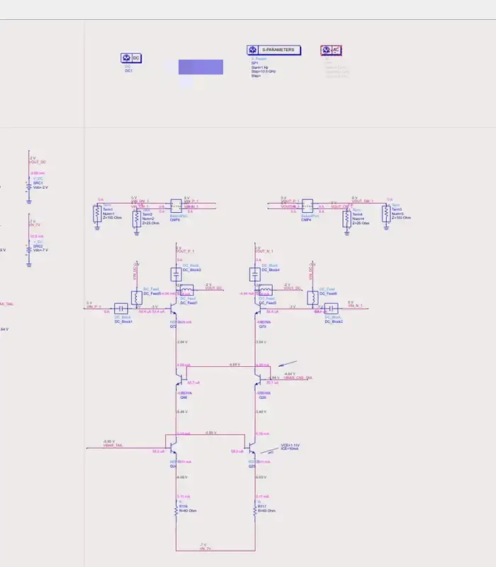
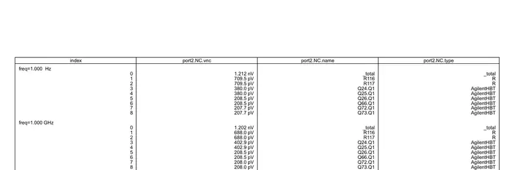
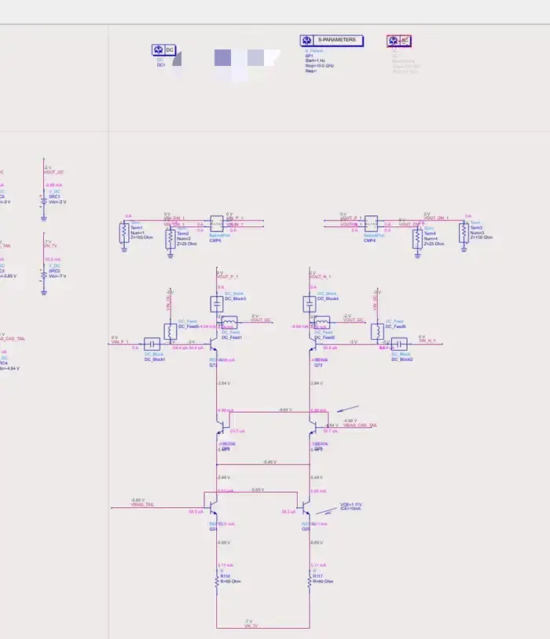
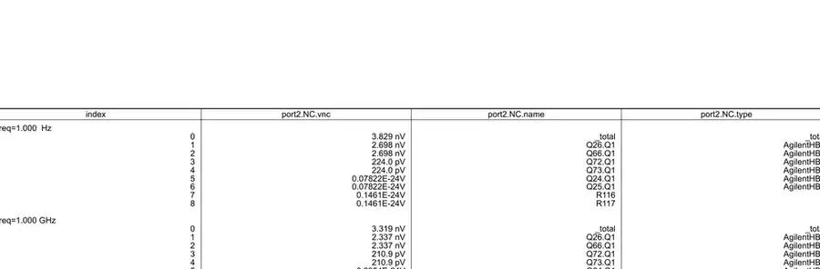

共享 cascode emitter 会破坏差模局部反馈并恶化伪差分放大器输出噪声
在这组伪差分 BJT 放大器的 ADS 仿真中，将左右两只尾电流 cascode 的 emitter 由独立节点改为共享节点后，DC 工作点变化不大，但差分输出总噪声由 1.212 nV/√Hz 增至 3.829 nV/√Hz。与此同时，下级尾电流支路 Q24/Q25、R116/R117 的差分噪声贡献几乎消失，而 Q66/Q26 的贡献显著上升并成为主导项。
核心原因不是噪声源本身突然变大，而是共享 emitter 改变了噪声到差分输出的传递函数：公共 emitter 节点在差模下近似成为 AC virtual ground，使原本各支路独立的 emitter local feedback 被削弱；底部尾电流支路噪声更偏向共模，而 cascode 自身噪声则更直接地转换为差模输出。本文通过简化小信号噪声模型推导这一机制，并给出适用边界与验证方法。
问题
对于一个伪差分 BJT 放大器，尾电流 cascode 有两种连接方式：
- 独立 emitter 结构：左右两支路的 cascode 管 emitter 彼此独立；
- 共享 emitter 结构：左右两只 cascode 管 emitter 直接短接。
两种结构的 DC 工作点接近，但 ADS Noise Contribution 显示：共享 emitter 后，差分输出总噪声明显变差。
本文要回答的核心问题是：
- 为什么共享 emitter 后，Q66/Q26 的输出噪声贡献会显著上升？
- 为什么 Q24/Q25、R116/R117 的差分噪声贡献反而几乎消失？
- 这一现象对应的普适物理规律是什么？
前提与定义
- 分析对象为 差分输出噪声，不是单端噪声。
- ADS 表格中的
port2.NC.vnc可视为各器件对差分输出端口的输出噪声贡献。 - 本文先使用低频简化小信号模型解释主导机理，再讨论高频与完整晶体管模型的偏离。
- 为突出主效应，先忽略：
- \(r_o\)；
- \(r_\pi\)；
- \(C_\pi, C_\mu\)；
- 左右失配；
- 负载与 bias 网络不对称。
简化算法
1. Observation
先直接看仿真现象。
独立 emitter 结构

图 1：独立 emitter 结构原理图。Q66/Q26 的 emitter 彼此独立，各自由下方尾电流支路驱动。

图 2：独立 emitter 结构的 ADS Noise Contribution。1 Hz 时 R116/R117、Q24/Q25 的贡献高于 Q66/Q26。
1 Hz 时主要结果如下：
| 项目 | 噪声贡献 |
|---|---|
| 总噪声 | 1.212 nV/√Hz |
| R116 / R117 | 709.5 pV/√Hz |
| Q24 / Q25 | 380.0 pV/√Hz |
| Q66 / Q26 | 208.5 pV/√Hz |
| Q72 / Q73 | 207.7 pV/√Hz |
共享 emitter 结构

图 3：共享 emitter 结构原理图。Q66/Q26 的 emitter 被直接连接到同一个节点。

图 4：共享 emitter 结构的 ADS Noise Contribution。1 Hz 时 Q66/Q26 成为主导噪声源，而 Q24/Q25、R116/R117 的差分贡献接近零。
1 Hz 时主要结果如下：
| 项目 | 噪声贡献 |
|---|---|
| 总噪声 | 3.829 nV/√Hz |
| Q26 / Q66 | 2.698 nV/√Hz |
| Q72 / Q73 | 224.0 pV/√Hz |
| Q24 / Q25 | 近似 0 |
| R116 / R117 | 近似 0 |
因此：
- 直接观察 1：总差分输出噪声由 1.212 nV/√Hz 增加到 3.829 nV/√Hz，约增加 \(3.16\times\)，即约 10 dB。
- 直接观察 2：Q66/Q26 的单管噪声贡献由 208.5 pV/√Hz 增加到 2.698 nV/√Hz，约增加 $$ \frac{2.698\ \mathrm{nV}}{208.5\ \mathrm{pV}}\approx 12.94, $$ 即约 22.2 dB。
- 直接观察 3：Q24/Q25、R116/R117 并不是“无噪声”，而是其对 差分输出 的贡献几乎消失。
2. 一阶物理判断
如果只是“尾电流源噪声更小”，总噪声本应下降；但实际总噪声反而上升，说明关键不在噪声源本身，而在于：
共享 emitter 改变了噪声到差分输出的传递函数。
更具体地说：
- 独立 emitter 时，每一支路都有各自的 emitter local feedback；
- 共享 emitter 时，这个局部反馈只剩下对 共模电流 有效，对 差模电流 不再有效。
这给出一个快速判断：
共享 emitter 很可能削弱 Q66/Q26 自身噪声的抑制，却把 Q24/Q25、R116/R117 的噪声推向共模。
下面用严格的小信号推导验证这一点。
严格算法
1. 独立 emitter：每支路都有局部负反馈
将每个 cascode emitter 向下看到的尾电流支路等效为阻抗
令：
- \(i_{nc}\)：cascode 管自身等效噪声电流；
- \(i_{nt}\)：下级尾电流支路等效噪声电流；
- \(v_e\)：cascode emitter 小信号电压。
由于基极偏置近似为 AC ground，可写
下方尾电流支路满足
联立得
代回可得 collector 电流
于是：
- 对 cascode 自身噪声： $$ H_{nc}=\frac{1}{1+g_mZ_T}; \tag{5} $$
- 对下级尾电流支路噪声： $$ H_{nt}=\frac{g_mZ_T}{1+g_mZ_T}. \tag{6} $$
当 \(g_mZ_T\gg 1\) 时：
Physical Interpretation
这意味着：
- Q66/Q26 自身噪声会先激发 emitter 电压，再通过 \(-g_mv_e\) 形成反向电流，因此被局部反馈抑制；
- Q24/Q25、R116/R117 的噪声则更容易被传递到输出。
这与图 2 的 Observation 一致。
2. 共享 emitter：差模局部反馈消失
共享 emitter 时：
两支路 collector 电流分别为
公共 emitter 节点 KCL：
因此
差分输出电流为
将式 (8)、(9) 相减，得到
这是最关键的结果。
Physical Interpretation
式 (12) 说明：
- \(i_{nt1}, i_{nt2}\) 主要只影响 总电流/共模电流；
- 对差分输出而言，下级尾电流支路噪声不再显式进入结果；
- cascode 自身噪声却以近似 unity differential transfer 的方式直接出现在输出。
这正对应图 4 的 Observation：Q24/Q25、R116/R117 的差分贡献接近零，而 Q66/Q26 变成主导噪声源。
3. 差模虚地视角
共享 emitter 的另一种快速理解方式是 odd-mode half-circuit。
对于理想差模扰动，公共 emitter 节点无法同时承受左右相反电压，因此在差模下近似有
于是对 cascode 自身噪声：
即：
共享 emitter 节点在差模下近似成为 AC virtual ground，从而破坏了原本的 emitter local feedback。
ADS/仿真实现
已知
- 仿真工具：ADS；
- 关注指标：差分输出端口
port2的 Noise Contribution； - 已给出的对比频点：1 Hz 与 1 GHz；
- 比较对象：独立 emitter 与共享 emitter 两种尾电流 cascode 连接方式。
证据保留
本笔记保留了四张最小证据集图片：
- 独立 emitter 原理图；
- 独立 emitter Noise Contribution；
- 共享 emitter 原理图；
- 共享 emitter Noise Contribution。
其余重复截图未保留。
仿真现象解释
Observation → Derivation → Physical Interpretation
现象 1：Q24/Q25、R116/R117 的差分贡献几乎消失
- Observation：共享 emitter 后，Q24/Q25 与 R116/R117 在
port2.NC.vnc中接近数值零。 - Derivation：式 (12) 中差分结果只保留 \(i_{nc1}-i_{nc2}\)，而 \(i_{nt1}, i_{nt2}\) 不再显式出现。
- Physical Interpretation：下级尾电流支路噪声主要被转化为共模电流，因此在理想差分输出中被抵消。
需要强调：这不表示这些器件“没有噪声”，而是表示它们的噪声 没有以差模形式显著出现在当前测量端口。
现象 2：Q66/Q26 的差分贡献显著增大
- Observation：Q66/Q26 由约 208.5 pV/√Hz 增至约 2.698 nV/√Hz。
- Derivation：独立 emitter 时，Q66/Q26 的噪声受 \(1/(1+g_mZ_T)\) 抑制；共享 emitter 后，该抑制在差模下消失。
- Physical Interpretation：公共 emitter 节点只能对总电流/共模电流提供反馈，无法对差分电流提供独立修正。
现象 3：总噪声变差而不是变好
- Observation：总噪声由 1.212 nV/√Hz 上升到 3.829 nV/√Hz。
- Derivation：虽然一部分底部噪声转为共模被抵消，但 cascode 自身噪声失去局部反馈抑制后成为主导项。
- Physical Interpretation：该拓扑并不是“降噪”，而是在重塑噪声模态与相关性。
当前电路结论 vs 一般规律
当前电路结论
对这组 ADS 仿真：
- 共享 emitter 使总差分输出噪声约增加 10 dB；
- Q66/Q26 单管差分输出噪声贡献约增加 22 dB；
- Q24/Q25、R116/R117 的差分噪声贡献接近零。
一般规律
只要两个 cascode emitter 的差模等效阻抗被明显拉低，就会削弱差模 emitter local feedback。一个更一般的近似是：若两个 emitter 之间跨接阻抗为 \(Z_X\)，则差模下可近似写成
从而 cascode 自身噪声的差模传递近似为
因此：
- \(Z_X\to\infty\)：退化回独立 emitter 结构；
- \(Z_X\to 0\)：退化回共享 emitter 结构，差模局部反馈最弱。
Design Insight
-
“某一类噪声贡献消失”不等于“总噪声更小”。 如果一个拓扑同时改变噪声相关性和反馈路径，必须同时看 noise source 与 transfer function。
-
共享节点会改变噪声的模态分布。 对底部尾电流源噪声，它更容易形成共模；对 cascode 自身噪声，它反而更容易形成差模。
-
理想差分抵消在真实电路中可能被失配破坏。 即便 ADS 理想对称仿真中 Q24/Q25、R116/R117 的差分贡献接近零，真实芯片中的失配、寄生与负载不对称仍可能把共模噪声重新转换为差模噪声。
-
不要只看 output noise。 最终设计还应同时检查 gain、input-referred noise、NF、CMRR、线性度与稳定性。
待验证项
- 分别查看
VOUT_P、VOUT_N的单端 Noise Contribution，验证下级尾电流支路噪声是否在两端主要表现为同相； - 在两个 emitter 之间引入参数化电阻 \(R_X\)，扫描 $$ 1\ \Omega,\ 10\ \Omega,\ 100\ \Omega,\ 1\ \mathrm{k}\Omega,\ 10\ \mathrm{k}\Omega,\ \ldots $$ 直到近似开路，验证式 (15)、(16) 的趋势；
- 在比较 output noise 的同时，进一步比较 $$ e_{n,\mathrm{in}}=\frac{e_{n,\mathrm{out}}}{|A_v|} $$ 以及最终 SNR / NF。
结论
对于本文伪差分放大器，可以将结论概括为：
独立 emitter 结构中，每支路都保留了自己的 emitter local feedback，因此 Q66/Q26 自身噪声到输出的差模传递约受 \(1/(1+g_mZ_T)\) 抑制。
而当两个 cascode emitter 直接相连时：
公共 emitter 节点在差模下近似成为 AC virtual ground，原先每支路独立的差模局部反馈消失；结果是下级尾电流支路噪声更偏向共模，而 Q66/Q26 自身噪声则以更强的差模形式直接出现在输出。
因此，当前 case 中共享 emitter 不但没有降低总差分输出噪声，反而显著恶化了它。